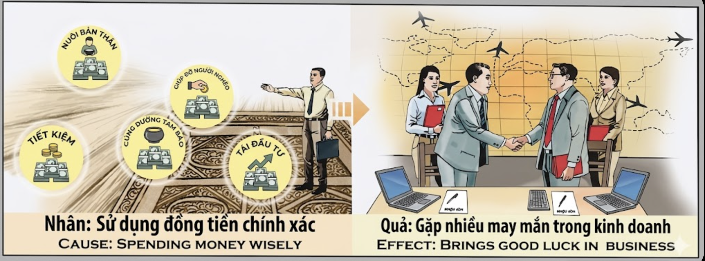

La Alquimia de la AbundanciaThe Alchemy of AbundanceL'Alchimia dell'Abbondanza丰饶的炼金术خيمياء الوفرةАлхимия изобилияDie Alchemie des ÜberflussesL'Alchimie de l'Abondance豊かさの錬金術A Alquimia da AbundânciaGiả Kim Thuật Của Sự Thịnh Vượng
El dinero no es un fin, sino una energía sagrada; quien lo gestiona con rectitud, transforma el ahorro en fortuna y la generosidad en éxito.Money is not an end but a sacred energy; he who manages it with righteousness transforms savings into fortune and generosity into success.Il denaro non è un fine ma un'energia sacra; chi lo gestisce con rettitudine trasforma il risparmio in fortuna e la generosità in successo.金钱不是终点，而是一种神圣的能量；正直管理它的人，能将储蓄转化为财富，将慷慨转化为成功。المال ليس غاية بل طاقة مقدسة؛ من يديرها باستقامة يحول الادخار إلى ثروة والكرم إلى نجاح.Деньги — это не цель, а священная энергия; тот, кто управляет ими праведно, превращает сбережения в удачу, а щедрость — в успех.Geld ist kein Endzweck, sondern eine heilige Energie; wer es mit Rechtschaffenheit verwaltet, verwandelt Ersparnisse in Glück und Großzügigkeit in Erfolg.L'argent n'est pas une fin mais une énergie sacrée ; celui qui le gère avec droiture transforme l'épargne en fortune et la générosité en succès.お金は目的ではなく神聖なエネルギーです。正しく管理する者は、蓄えを富に、寛大さを成功に変えます。O dinheiro não é um fim mas uma energia sagrada; quem o gere com rectidão transforma a poupança em fortuna e a generosidade em sucesso.Đồng tiền không phải là đích đến mà là một dạng năng lượng thiêng liêng; kẻ biết quản lý nó bằng sự chính trực sẽ biến tiết kiệm thành vận may và lòng hào hiệp thành thành công.
En la filosofía del karma, el dinero es considerado una forma de energía vital condensada. La manera en que fluye de nuestras manos determina la manera en que regresará a nosotros. "Gastar con sabiduría" no significa amar el dinero, sino respetar la fuerza creativa que representa. Cuando distribuimos nuestra riqueza con equilibrio —asegurando nuestro sustento, ahorrando para el futuro, ayudando a los necesitados y apoyando lo sagrado— estamos sintonizando con la ley de la circulación universal.
Esta gestión ética crea un campo de "suerte empresarial". Al reinvertir con visión y compartir con desapego, estamos enviando un mensaje de autosuficiencia y confianza al cosmos. Como resultado, los obstáculos en los negocios se disuelven, los socios adecuados aparecen en el momento preciso y los proyectos prosperan más allá de la lógica fría del mercado. La prosperidad kármica no proviene de la acumulación egoísta, sino de ser un canal limpio a través del cual el valor fluye hacia el mundo.
In the philosophy of karma, money is considered a form of condensed vital energy. The way it flows from our hands determines the way it will return to us. "Spending with wisdom" does not mean loving money, but respecting the creative force it represents. When we distribute our wealth with balance —securing our livelihood, saving for the future, helping those in need, and supporting the sacred— we are tuning in to the law of universal circulation.
This ethical management creates a field of "business luck." By reinvesting with vision and sharing with detachment, we are sending a message of self-sufficiency and confidence to the cosmos. As a result, business obstacles dissolve, the right partners appear at the precise moment, and projects flourish beyond the cold logic of the market. Karmic prosperity does not come from selfish accumulation, but from being a clean channel through which value flows to the world.
Nella filosofia del karma, il denaro è considerato una forma di energia vitale condensata. Il modo in cui fluisce dalle nostre mani determina il modo in cui tornerà a noi. "Spendere con saggezza" non significa amare il denaro, ma rispettare la forza creativa que rappresenta. Quando distribuiamo la nostra ricchezza con equilibrio —assicurando il nostro sostentamento, risparmiando para il futuro, aiutando i bisognosi e sostenendo il sacro— ci sintonizziamo con la legge della circolazione universale.
Questa gestione etica crea un campo di "fortuna aziendale". Reinvestendo con visione e condividendo con distacco, inviamo un messaggio di autosufficienza e fiducia al cosmo. Di conseguenza, gli ostacoli negli affari si dissolvono, i partner giusti appaiono al momento giusto e i progetti prosperano oltre la fredda logica del mercato. La prosperità karmica non deriva dall'accumulo egoistico, ma dall'essere un canale pulito attraverso il quale il valore fluisce verso il mondo.
在业力哲学中，金钱被视为一种凝聚的生命能量形式。它从我们手中流出的方式决定了它回到我们身边的方式。“明智地支出”并不意味着热爱金钱，而是尊重它所代表的创造力。当我们平衡地分配财富——确保生计、为未来储蓄、帮助有需要的人并支持神圣事业时——我们就是在与普遍循环法则保持一致。
这种合乎伦理的管理创造了一个“商业运气”场。通过有远见地再投资和超然地分享，我们向宇宙传递了一个自给自足和自信的信息。结果，商业障碍消融，合适的合作伙伴在精确的时刻出现，项目在冷酷的市场逻辑之外蓬勃发展。业力繁荣并非源于自私的积累，而是源于成为价值流向世界的清洁渠道。
في فلسفة الكارما ، يُعتبر المال شكلاً من أشكال الطاقة الحيوية المكثفة. الطريقة التي يتدفق بها من أيدينا تحدد الطريقة التي سيعود بها إلينا. 'الإنفاق بحكمة' لا يعني حب المال ، بل احترام القوة الإبداعية التي يمثلها. عندما نوزع ثروتنا بتوازن - نؤمن سبل عيشنا ، وندخر للمستقبل ، ونساعد المحتاجين ، وندعم المقدسات - فإننا ننسجم مع قانون التداول العالمي.
تخلق هذه الإدارة الأخلاقية مجالاً لـ 'الحظ التجاري'. من خلال إعادة الاستثمار برؤية والمشاركة بتجرد ، فإننا نرسل رسالة الاكتفاء الذاتي والثقة إلى الكون. نتيجة لذلك ، تذوب عقبات العمل ، ويظهر الشركاء المناسبون في اللحظة المحددة ، وتزدهر المشاريع بما يتجاوز المنطق البارد للسوق. الرخاء الكارميك لا يأتي من التراكم الأناني ، بل من كونه قناة نظيفة تتدفق القيمة من خلالها إلى العالم.
В философии кармы деньги считаются формой сконцентрированной жизненной энергии. То, как они вытекают из наших рук, определяет то, как они к нам вернутся. «Тратить с мудростью» — это не значит любить деньги, это значит уважать созидательную силу, которую они представляют. Когда мы распределяем свое богатство сбалансированно — обеспечивая свои средства к существованию, откладывая на будущее, помогая нуждающимся и поддерживая священное — мы настраиваемся на закон всеобщего круговорота.
Это этичное управление создает поле «деловой удачи». Реинвестируя с видением и делясь с непривязанностью, мы посылаем космосу сигнал о самодостаточности и уверенности. В результате деловые препятствия исчезают, нужные партнеры появляются в точно заданный момент, а проекты процветают за пределами холодной логики рынка. Кармическое процветание проистекает не из эгоистичного накопления, а из того, что мы являемся чистым каналом, через который ценность течет в мир.
In der Philosophie des Karma wird Geld als eine Form kondensierter Lebensenergie betrachtet. Die Art und Weise, wie es aus unseren Händen fließt, bestimmt die Art und Weise, wie es zu uns zurückkehrt. „Mit Weisheit ausgeben“ bedeutet nicht, Geld zu lieben, sondern die schöpferische Kraft zu respektieren, die es repräsentiert. Wenn wir unseren Reichtum mit Ausgewogenheit verteilen — unseren Lebensunterhalt sichern, für die Zukunft sparen, Bedürftigen helfen und das Heilige unterstützen —, stimmen wir uns auf das Gesetz des universellen Kreislaufs ein.
Dieses ethische Management schafft ein Feld des „geschäftlichen Glücks“. Durch reinvestieren mit Weitsicht und Teilen mit Gelassenheit senden wir eine Botschaft der Selbstgenügsamkeit und des Vertrauens an den Kosmos. Infolgedessen lösen sich geschäftliche Hindernisse auf, die richtigen Partner erscheinen im richtigen Moment und Projekte gedeihen jenseits der kalten Logik des Marktes. Karmischer Wohlstand kommt nicht von egoistischer Anhäufung, sondern davon, ein sauberer Kanal zu sein, durch den Wert in die Welt fließt.
Dans la philosophie du karma, l'argent est considéré comme une forme d'énergie vitale condensée. La manière dont il s'écoule de nos mains détermine la manière dont il nous reviendra. « Dépenser avec sagesse » ne signifie pas aimer l'argent, mais respecter la force créatrice qu'il représente. Lorsque nous distribuons notre richesse avec équilibre — en assurant notre subsistance, en épargnant pour l'avenir, en aidant les nécessiteux et en soutenant le sacré — nous nous accordons à la loi de la circulation universelle.
Cette gestion éthique crée un champ de « chance commerciale ». En réinvestissant avec vision et en partageant avec détachement, nous envoyons un message d'autosuffisance et de confiance au cosmos. En conséquence, les obstacles commerciaux se dissolvent, les bons partenaires apparaissent au moment précis et les projets prospèrent au-delà de la logique froide du marché. La prospérité karmique ne provient pas d'une accumulation égoïste, mais du fait d'être un canal propre à travers lequel la valeur coule vers le monde.
カルマの哲学において、お金は凝縮された生命エネルギーの一形態と考えられています。私たちの手からそれがどのように流れ出すかが、それがどのように戻ってくるかを決定します。「知恵を持って使う」とはお金を愛することではなく、お金が表す創造的な力を尊重することを意味します。生計を立て、将来のために蓄え、困っている人を助け、聖なるものを支援するというバランスを持って富を分配するとき、私たちは普遍的な循環の法則に同調しています。
この倫理的な管理は「ビジネス運」の場を作り出します。先見の明を持って再投資し、執着せずに分かち合うことで、私たちは宇宙に自給自足と自信のメッセージを送っています。その結果、ビジネス上の障害は解消され、適切なパートナーが正確なタイミングで現れ、市場の冷徹な論理を超えてプロジェクトが繁栄します。カルマ的な繁栄は利己的な蓄積からではなく、価値が世界に流れるための清潔なチャネルであることから生まれます。
Na filosofia do karma, o dinheiro é considerado uma forma de energia vital condensada. A maneira como flui das nossas mãos determina a maneira como voltará para nós. "Gastar com sabedoria" não significa amar o dinheiro, mas respeitar a força criativa que representa. Quando distribuímos a nossa riqueza com equilíbrio —assegurando o nosso sustento, poupando para o futuro, ajudando os necessitados e apoiando o sagrado— estamos a sintonizar-nos com a lei da circulação universal.
Esta gestão ética cria um campo de "sorte empresarial". Ao reinvestir com visão e partilhar com desapego, estamos a enviar uma mensagem de auto-suficiência e confiança ao cosmos. Como resultado, os obstáculos nos negócios dissolvem-se, os parceiros certos aparecem no momento preciso e os projectos prosperam para além da lógica fria do mercado. A prosperidade kármica não provém da acumulação egoísta, mas de ser um canal limpo através do qual o valor flui para o mundo.
Trong triết lý nhân quả, đồng tiền được coi là một dạng năng lượng sống tích tụ. Cách nó rời khỏi bàn tay chúng ta sẽ quyết định cách nó quay trở lại. 'Chi tiêu thông tuệ' không có nghĩa là tham luyến vật chất, mà là tôn trọng sức mạnh sáng tạo mà nó đại diện. Khi chúng ta phân bổ tài sản một cách cân bằng — bảo đảm cuộc sống, tiết kiệm cho tương lai, giúp đỡ người nghèo và cúng dường Tam Bảo — chúng ta đang hòa nhịp vào quy luật luân chuyển của vũ trụ.
Sự quản lý đạo đức này tạo ra một trường 'vận may kinh doanh'. Bằng cách tái đầu tư có tầm nhìn và chia sẻ với tâm không mong cầu, chúng ta đang gửi đi bức thông điệp về sự tự chủ và niềm tin vào vũ trụ. Kết quả là những rào cản trong kinh doanh sẽ tan biến, đối tác phù hợp sẽ xuất hiện đúng lúc và các dự án sẽ thăng hoa vượt xa những logic khô khan của thị trường. Sự thịnh vượng đến từ nhân quả không sinh ra từ tích trữ ích kỷ, mà từ việc trở thành một kênh dẫn thuần khiết để giá trị tuôn chảy vào thế gian.
El Mercader de las Cuatro Bolsas
The Merchant of the Four Bags
Il Mercante delle Quattro Borse
四袋商人
تاجر الأكياس الأربعة
Купец четырех мешков
Der Kaufmann der vier Beutel
Le Marchand aux Quatre Sacs
四つの袋の商人
O Mercador das Quatro Bolsas
Thương Nhân Và Bốn Chiếc Túi
En la antigua Samarcanda, el mercader Jalal era conocido por sus cuatro bolsas de cuero. Cada vez que recibía oro, lo distribuía con disciplina sagrada: la primera para el sustento de su familia; la segunda para los pobres de la aldea; la tercera para las ofrendas del templo; y la cuarta para reinvertir en nuevas rutas comerciales. Sus rivales le llamaban ingenuo: "Cada moneda que das es una moneda perdida".
Un invierno, las tormentas de arena sepultaron los caminos durante tres meses. Los mercaderes que habían atesorado todo su oro sin compartir se encontraron solos, sin provisiones y sin aliados. Jalal, en cambio, fue alimentado por los mismos aldeanos a quienes siempre había ayudado. Cuando los caminos volvieron a abrirse, socios de tres países acudieron a él para firmar acuerdos que multiplicaron su fortuna diez veces.
Al final de su vida, Jalal reveló el secreto: "El dinero es como el agua de riego; si lo estancas, se pudre; si lo dejas correr sin control, se pierde. Pero si lo diriges hacia donde hay sed y hacia donde hay semilla, el karma convierte cada gesto de generosidad en una puerta que el universo abre a tu favor —en ésta y en cada vida por venir—. El hombre sabio no acumula riqueza: la hace circular, y la riqueza regresa a él multiplicada".
In ancient Samarkand, the merchant Jalal was known for his four leather bags. Every time he received gold, he divided it with sacred discipline: the first for his family's livelihood, the second for the village poor, the third for temple offerings, and the fourth to reinvest in new trade routes. His rivals called him naive: "Every coin you give is a coin lost."
One winter, sandstorms buried all roads for three months. Merchants who had hoarded their gold found themselves alone—without supplies and without allies. Jalal, however, was fed by the very villagers he had always helped. When the roads reopened, partners from three countries came to him to sign agreements that multiplied his fortune tenfold.
At the end of his life, Jalal revealed the secret: "Money is like irrigation water; if you stagnate it, it rots; if you let it run without control, it is lost. But if you direct it toward where there is thirst and toward where there is seed, karma turns every act of generosity into a door that the universe opens in your favor—in this life and in every life to come. The wise man does not accumulate wealth: he circulates it, and wealth returns to him multiplied."
Nell'antica Samarcanda, il mercante Jalal era noto para le sue quattro borse di cuoio. Ogni volta que riceveva oro, lo divideva: una para la sua famiglia, un'altra para i bisognosi, una terza para il tempio e la quarta para reinvestire nella sua attività. Altri ridevano: "Dai troppo, Jalal!". Ma quando le tempeste chiusero le rotte, solo lui ricevette aiuto dai villaggi.
Jalal confessò alla fine della sua vita: "Il denaro è come l'acqua per l'irrigazione; se lo ristagni, marcisce; se lo lasci correre senza controllo, si perde. Ma se lo dirigi verso dove c'è sete e verso dove c'è il seme, il karma trasforma ogni gesto di generosità in una porta che l'universo apre a tuo favore — in questa vita e in ogni vita a venire. L'uomo saggio non accumula ricchezza: la fa circolare, e la ricchezza torna a lui moltiplicata."
Un inverno, le tempeste di sabbia seppellirono le strade per tre mesi. I mercanti che avevano accumulato tutto il loro oro senza condividere si ritrovarono soli, senza provviste e senza alleati. Jalal, invece, fu nutrito dagli stessi villici che aveva sempre aiutato. Quando le strade riaprirono, soci di tre paesi vennero da lui per firmare accordi che moltiplicarono la sua fortuna per dieci.
在古老的撒马尔罕，商人 Jalal 以他的四个皮袋而闻名。每当他收到黄金，他都会分发它：一个给他的家人，另一个给有需要的人，第三个给寺庙，第四个给他的业务再投资。其他人笑话他：“你给得太多了，Jalal！”但是，当风暴关闭了路线时，只有他得到了村庄的帮助。
Jalal 在临终前坦白道：“金钱就像灌溉水；如果你让它停滞不前，它就会腐烂；如果你让它不受控制地流失，它就会消失。但是，如果你把它引向有渴望的地方，引向有种子的地方，业力就会将每一个慷慨的举动变成宇宙为你打开的一扇门——在今世与每一个来世。智者不积累财富，而是让财富流动，财富便以倍增的方式归来。"
一个冬天，沙尘暴封锁道路整整三个月。那些囤积黄金从不分享的商人孤立无援。而 Jalal 却得到了他一直资助的村民们的接济。道路重新开通后，来自三个国家的合作伙伴纷纷找到他签署协议，使他的财富增长了十倍。
في سمرقند القديمة، كان التاجر جلال معروفاً بأكياسه الجلدية الأربعة. في كل مرة يحصل فيها على الذهب، كان يقسمه: واحد لعائلته، وآخر للمحتاجين، والثالث للمعبد، والرابع لإعادة استثماره في عمله. ضحك الآخرون: 'أنت تعطي الكثير يا جلال!'. ولكن عندما أغلقت العواصف الطرق، كان هو الوحيد الذي تلقى المساعدة من القرى.
اعترف جلال في نهاية حياته: 'المال مثل ماء الري؛ إذا ركد تعفن، وإذا تركته يجري بلا سيطرة ضاع. لكن إن وجّهته نحو العطش والبذور، تحوّل كل كرم إلى باب يفتحه الكون لصالحك — في هذه الحياة وفي كل حياة قادمة. الحكيم لا يكنز الثروة: يجعلها تتدفق، فتعود مضاعفة'.
في أحد فصول الشتاء، طمرت العواصف الرملية الطرق لمدة ثلاثة أشهر. وجد التجار المكتنزون أنفسهم وحيدين بلا مؤن وبلا حلفاء. أما جلال فأطعمه أبناء القرية الذين طالما أعانهم. وحين انفتحت الطرق من جديد، جاءه شركاء من ثلاثة بلدان ليوقعوا معه عقوداً ضاعفت ثروته عشر مرات.
В древнем Самарканде купец Джалал был известен своими четырьмя кожаными мешками. Каждый раз, получая золото, он делил его: один для своей семьи, другой для нуждающихся, третий для храма и четвертый для реинвестирования в свой бизнес. Другие смеялись: «Ты слишком много отдаешь, Джалал!». Но когда бури закрыли пути, только он получил помощь от деревень.
Джалал признался в конце своей жизни: «Деньги подобны воде для полива; если они застаиваются, то гниют; если вы позволяете им течь без контроля, они теряются. Но если вы направите их туда, где жажда, и туда, где семена, карма превратит каждый жест щедрости в дверь, которую вселенная откроет вам — в этой жизни и в каждой последующей. Мудрый человек не накапливает богатство: он пускает его в оборот, и богатство возвращается к нему приумноженным».
Той зимой песчаные бури погребли все дороги на три месяца. Те, кто копил золото, оказались в одиночестве без припасов и союзников. Джалала же кормили те самые крестьяне, которым он всегда помогал. Когда дороги вновь открылись, партнёры из трёх стран пришли подписывать сделки, умножив его состояние в десять раз.
Im alten Samarkand war der Kaufmann Jalal für seine vier Lederbeutel bekannt. Jedes Mal, wenn er Gold erhielt, teilte er es auf: einen für seine Familie, einen anderen für die Bedürftigen, einen dritten für den Tempel und den vierten für Reinvestitionen in sein Geschäft. Andere lachten: „Du gibst zu viel, Jalal!“. Doch als Stürme die Routen versperrten, erhielt nur er Hilfe von den Dörfern.
Jalal gestand am Ende seines Lebens: „Geld ist wie Bewässerungswasser; wenn man es staut, verfault es; wenn man es unkontrolliert fließen lässt, geht es verloren. Aber wenn man es dorthin lenkt, wo Durst und Samen sind, verwandelt das Karma jeden Akt der Großzügigkeit in eine Tür, die das Universum zu deinen Gunsten öffnet — in diesem und in jedem zukünftigen Leben. Der weise Mensch häuft keinen Reichtum an: Er lässt ihn zirkulieren, und der Reichtum kehrt vervielfacht zurück.“
Einen Winter lang begruben Sandstürme alle Wege drei Monate lang. Die Kaufleute, die gehortet hatten, fanden sich allein — ohne Vorräte und ohne Verbündete. Jalal hingegen wurde von denselben Dorfbewohnern versorgt, denen er stets geholfen hatte. Als die Wege wieder frei waren, kamen Partner aus drei Ländern, um Verträge zu unterzeichnen, die sein Vermögen verzehnfachten.
Dans l'ancienne Samarcande, le marchand Jalal était connu pour ses quatre sacs en cuir. Chaque fois qu'il recevait de l'or, il le divisait : un pour sa famille, un autre pour les nécessiteux, un troisième pour le temple et le quatrième pour réinvestir dans son entreprise. D'autres riaient : « Tu donnes trop, Jalal ! ». Mais lorsque les tempêtes fermèrent les routes, lui seul reçut de l'aide des villages.
Jalal confessa à la fin de sa vie : « L'argent est comme l'eau d'irrigation ; si vous le stagnez, il pourrit ; si vous le laissez couler sans contrôle, il se perd. Mais si vous le dirigez vers là où il y a soif et graine, le karma transforme chaque geste de générosité en une porte que l'univers vous ouvre — dans cette vie et dans chaque vie à venir. L'homme sage ne accumule pas la richesse : il la fait circuler, et la richesse lui revient multipliée. »
Un hiver, des tempêtes de sable ensevelirent les chemins pendant trois mois. Les marchands qui avaient tout accumulé se retrouvèrent seuls, sans provisions ni alliés. Jalal fut nourri par les mêmes villageois qu'il avait toujours aidés. Quand les routes rouvrirent, des partenaires de trois pays vinrent signer des accords qui multiplièrent sa fortune par dix.
古代サマルカンドに、四つの革袋で知られる商人ジャラールがいました。彼は金貨を受け取るたびにそれを分けました。一つは家族のため、もう一つは困窮者のため、三つ目は神殿のため、そして四つ目は商売への再投資のためです。他の商人は笑いました。「ジャラール、君は与えすぎだ！」。しかし、嵐が交易路を閉ざしたとき、村々から助けを得られたのは彼だけでした。
ジャラールは晩年、こう打ち明けました。「お金は灌漑の水のようなものだ。せき止めれば腐り、無計画に流せば失われる。しかし、渇きがある場所、種がある場所へと導けば、カルマはすべての寛大な行為を、宇宙がおまえのために開く扉へと変えてくれる——今世においても、来世においても。賢者は富を積み上げない。富を循環させる。そして富は何倍にもなって返ってくるのだ」。
ある冬、砂嵐が三か月間道を封じました。金を蓄え誰とも分かち合わなかった商人たちは孤立無援となりました。しかしジャラールは、いつも助けていた村人たちから食事を提供されました。道が再び開いたとき、三か国のパートナーが訪れ、彼の財産を十倍に増やす契約を結びました。
Na antiga Samarcanda, o mercador Jalal era conhecido pelas suas quatro bolsas de couro. Cada cada vez que recebia ouro, dividia-o: uma para a sua família, outra para os necessitados, uma terceira para o templo e a quarta para reinvestir no seu negócio. Outros riam: "Dás demais, Jalal!". Mas quando as tempestades fecharam as rotas, só ele recebeu ajuda das aldeias.
Jalal confessou ao fim da sua vida: "O dinheiro é como a água da rega; se o estancares, apodrece; se o deixares correr sem controlo, perde-se. Mas se o dirigires para onde há sede e semente, o karma transforma cada gesto de generosidade numa porta que o universo abre a teu favor — nesta vida e em cada vida por vir. O homem sábio não acumula riqueza: fá-la circular, e a riqueza regressa multiplicada."
Um inverno, tempestades de areia soterram os caminhos durante três meses. Os mercadores que tinham acumulado tudo sozinhos ficaram sem provisões e sem aliados. Jalal foi alimentado pelos mesmos aldeões que sempre ajudara. Quando as estradas voltaram a abrir, parceiros de três países vieram assinar acordos que multiplicaram a sua fortuna por dez.
Tại vùng Samarkand cổ kính, thương nhân Jalal nổi tiếng với bốn chiếc túi da luôn mang theo mình. Mỗi khi kiếm được vàng, ông đều chia đều vào đó: một túi lo cho gia đình, một túi giúp đỡ người nghèo, túi thứ ba cúng dường đền đài và túi cuối cùng dùng để tái đầu tư. Những thương nhân khác thường cười nhạo: 'Ngài hào phóng quá mức rồi đấy, Jalal ạ!'. Thế nhưng, khi những cơn bão cát chặn đứng mọi nẻo đường giao thương, chỉ mình ông nhận được sự tiếp tế từ các dân làng địa phương.
Cuối đời mình, Jalal đã tiết lộ bí quyết: 'Đồng tiền giống như nước tưới tiêu; nếu để nó đọng lại một chỗ, nó sẽ ôi thối; nếu để nó tuôn chảy vô kiểm soát, nó sẽ cạn kiệt. Nhưng nếu dẫn nó đến nơi đang khát và nơi đang gieo hạt, nhân quả sẽ biến mỗi hành động hào hiệp thành một cánh cửa mà vũ trụ mở ra cho ta — ở kiếp này và mọi kiếp về sau. Người khôn ngoan không tích lũy của cải: họ để nó lưu thông, và của cải nhân bội mà quay trở về'.
Mùa đông năm đó, bão cát vùi lấp mọi con đường suốt ba tháng. Những thương nhân tích trữ mà không chia sẻ thấy mình cô độc hoàn toàn — không lương thực, không đồng minh. Còn Jalal được chính những dân làng ông từng giúp đỡ tiếp tế. Khi các đường mở trở lại, đối tác từ ba quốc gia tìm đến ký hợp đồng, nhân mười lần tài sản của ông.
La Inspiración Original
The Original Inspiration
Nguồn cảm hứng ban đầu
La historia que hemos relatado en este capítulo está inspirada por el pasaje de la escena original de los murales «Tranh Nhân Quả» (Ilustraciones del Karma) del Templo Linh Ung en Da Nang, capturado en la imagen.
The story we have told in this chapter is inspired by the passage from the original scene of the “Tranh Nhân Quả” (Illustrations of Karma) murals of the Linh Ung Temple in Da Nang, captured in the image.
Câu chuyện chúng tôi kể trong chương này được lấy cảm hứng từ đoạn trích từ cảnh gốc của bức tranh tường “Tranh Nhân Quả” ở chùa Linh Ứng ở Đà Nẵng, được ghi lại trong hình ảnh.

Como se puede apreciar en el pasaje extraído del mural, la causa y su efecto kármico están descritos originalmente en vietnamita y con una breve traducción al inglés. A continuación, te ofrecemos su traducción detallada en los distintos idiomas:
As can be seen in the passage taken from the mural, the cause and its karmic effect are originally described in Vietnamese and with a brief translation into English. Below, we offer you its detailed translation in the different languages:
🇻🇳 Tiếng Việt:
Nhân: Sử dụng đồng tiền chính xác.
Quả: Gặp nhiều may mắn trong kinh doanh.
🇬🇧 English:
Cause: Spending money wisely.
Effect: Brings good luck in business.
Traducción Recreada:
Causa: Utilizar el dinero correctamente (Sustento, Ahorro, Ayuda, Ofrenda y Reinversión).
Efecto: Trae abundantes éxitos y suerte en los negocios.
Recreated Translation:
Cause: Using money correctly (Livelihood, Saving, Helping, Offering, and Reinvesting).
Effect: Brings abundant success and luck in business.
Traduzione ricreata:
Causa: Usare il denaro correttamente (Sostentamento, Risparmio, Aiuto, Offerta e Reinvestimento).
Effetto: Porta abbondante successo e fortuna negli affari.
重新创建的翻译:
原因：正确使用金钱（生计、储蓄、帮助、提供和再投资）。
影响：在商业中带来丰硕的成功和好运。
الترجمة المعاد صياغتها:
السبب: استخدام المال بشكل صحيح (الرزق ، الادخار ، المساعدة ، العطاء وإعادة الاستثمار).
الأثر: يجلب الكثير من النجاح والحظ في الأعمال.
Воссозданный перевод:
Причина: Правильное использование денег (Содержание, Сбережения, Помощь, Подношение и Реинвестирование).
Следствие: Приносит большой успех и удачу в бизнесе.
Neu erstellte Übersetzung:
Ursache: Geld richtig verwenden (Lebensunterhalt, Sparen, Helfen, Opfern und Reinvestieren).
Wirkung: Bringt reichlich Erfolg und Glück im Geschäft.
Traduction recréée:
Cause : Utiliser l'argent correctement (Subsistance, Épargne, Aide, Offrande et Réinvestissement).
Effet : Apporte d'abondants succès et de la chance en affaires.
再作成された翻訳:
原因：お金を正しく使うこと（生計、貯蓄、援助、布施、再投資）。
影響：ビジネスにおいて豊かな成功と幸運をもたらします。
Tradução recriada:
Causa: Usar o dinheiro correctamente (Sustento, Poupança, Ajuda, Oferenda e Reinvestimento).
Efeito: Traz abundantes sucessos e sorte nos negócios.